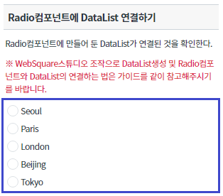
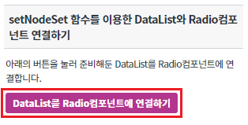
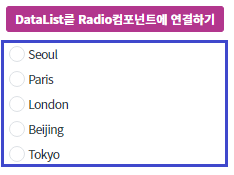
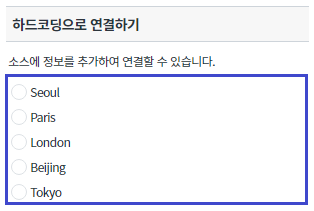
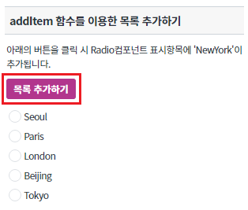
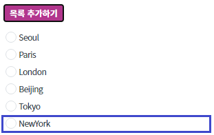
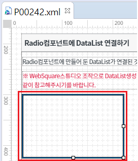
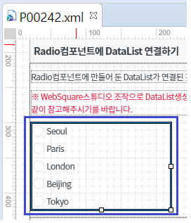
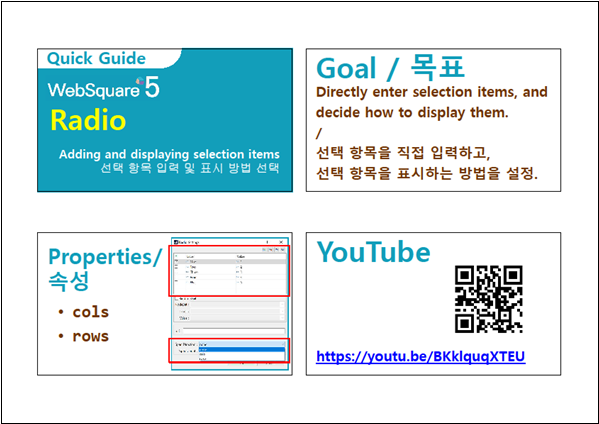
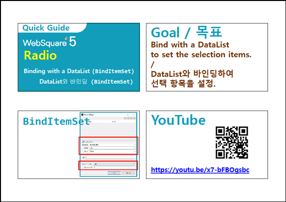

[Radio] DataList와 연결하여 선택 항목을 설정하기
1개요
WebSquare 스튜디오에서 DataList 작성법과 Radio컴포넌트에 DataList를 연결하여 선택 항목을 설정하는 예제입니다. 이 기능은 아래의 속성과 함수로 사용할 수 있습니다. - appearance : (속성)선택항목 표현방식 - setNodeSet : (함수)Radio컴포넌트에 DataList 바인딩 - addItem : (함수)선택 항목을 추가. index를 지정하지 않으면 하위로 추가됨.
2구현된 기능
Radio컴포넌트에 DataList 연결하기
setNodeSet 함수를 이용한 DataList와 Radio컴포넌트 연결하기
하드코딩으로 연결하기
addItem함수를 이용한 목록 추가하기
3예제 테스트 방법
3.1Radio컴포넌트에 DataList 연결하기
- STEP1. 실행 결과를 확인합니다.
아래 그림과 같이 Radio컴포넌트에 DataList가 연결된 것을 확인합니다.
※ WebSquare 스튜디오에서 Radio컴포넌트와 DataList의 연결 방법은 4.1 참고
[브라우저(Chrome) 실행 예시]

3.2setNodeSet 함수를 이용한 DataList와 Radio컴포넌트 연결하기
- STEP1. 버튼을 클릭 합니다.
버튼 DataList를 Radio컴포넌트에 연결하기 를 클릭합니다.
버튼에 있는 setNodeSet() 함수로 인해 Radio컴포넌트에 DataList가 설정됩니다.
[브라우저(Chrome) 실행 예시]

- STEP2. 실행 결과를 확인합니다.
아래의 이미지와 같이 Radio컴포넌트에 DataList가 설정되어 화면에 표시되는 것을 확인합니다.
[브라우저(Chrome) 실행 예시]

3.3하드코딩으로 연결하기
- STEP1. 실행 결과를 확인합니다.
아래 그림과 같이 하드코딩으로 Radio컴포넌트에 DataList가 연결된 것을 확인합니다.
※ 하드코딩으로 추가하는 법은 4.3 참고
[브라우저(Chrome) 실행 예시]

3.4addItem 함수를 이용한 목록 추가하기
- STEP1. 버튼을 클릭 합니다.
버튼 목록 추가하기 를 클릭합니다.
버튼에 있는 addItem() 함수로 인해 Radio컴포넌트의 항목이 추가됩니다.
[브라우저(Chrome) 실행 예시]

- STEP2. 실행 결과를 확인합니다.
아래의 이미지와 같이 Radio컴포넌트의 항목에 'NewYork'이 추가되어있는 것을 확인합니다.
[브라우저(Chrome) 실행 예시]

4구현 예시
4.1Radio컴포넌트에 DataList 연결하기
- STEP1. 더블 클릭하기
WebSquare 스튜디오에서 DataList와 연결하고 싶은 radio컴포넌트를 더블 클릭합니다.
[브라우저(Chrome) 실행 예시]

- STEP2. NodeSet 설정하기
'Radio 설정 팝업' 창에서 'BindItemSet' 체크박스를 체크 후, 'NodeSet'에서 만들어둔 DataList를 선택합니다.
[브라우저(Chrome) 실행 예시]

- STEP3. Label, Value 설정하기
DataList에 설정해둔 Label, Value를 선택하고 'OK' 버튼을 클릭하여 설정창을 닫습니다.
[브라우저(Chrome) 실행 예시]

- STEP4. 실행 결과를 확인합니다.
아래 그림과 같이 Radio컴포넌트에 DataList가 연결된 것을 확인합니다.
[브라우저(Chrome) 실행 예시]

4.2setNodeSet 함수를 이용한 DataList와 Radio컴포넌트 연결하기
- STEP1. Radio의 함수를 정의합니다.
Radio컴포넌트에 DataList를 설정하기 위해 아래의 함수를 사용합니다.
[선택] setNodeSet // Radio컴포넌트와 DataList를 연결
- STEP2. setNodeSet를 사용하여 Radio컴포넌트에 값을 설정합니다.
[소스 코드 예시]
/** * 버튼 [DataList를 Radio컴포넌트에 연결하기] 클릭 시 */ scwin.btn_ex1_onclick = function(e) { // Radio 'rad_exam2'에 DataList 'dlt_dataList1'을 연결합니다. rad_exam2.setNodeSet("data:dlt_dataList1", "City", "Code") };
4.3하드코딩으로 연결하기
- STEP1. 아래의 [소스 코드 예시] 처럼 소스 코드를 추가합니다.
<xf:select1> 태그 밑에 있는 하위 태그를 다음과 같이 추가합니다.
[소스 코드 예시]
<xf:select1 appearance="full" selectedIndex="-1" id="rad_exam3"> <xf:choices> <xf:itemset nodeset="data:dlt_dataList1"> <xf:label ref="City"></xf:label> <xf:value ref="Code"></xf:value> </xf:itemset> </xf:choices> </xf:select1>
4.4addItem 함수를 이용한 목록 추가하기
- STEP1. Radio의 함수를 정의합니다.
Radio컴포넌트에 표시 항목을 늘리기 위해 아래의 함수를 사용합니다.
[선택] addItem // 선택 항목을 추가. index를 지정하지 않으면 하위로 추가됨.
- STEP2. addItem을 사용하여 Radio컴포넌트에 값을 설정합니다.
[소스 코드 예시]
/** * 버튼 [목록 추가하기] 클릭 시 */ scwin.btn_ex2_onclick = function (e) { // Radio 'rad_exam4'의 표시목록을 추가합니다. rad_exam4.addItem("NY", "NewYork", "5"); };
5주요 API
appearance
setNodeSet
addItem
6참고 문서
[웹스퀘어5 SP5 개발 가이드] Radio
링크 : https://docs1.inswave.com/sp5_user_guide/8df43d1f59fab704#b82f1edea4db4407
[웹스퀘어5 SP5 개발 가이드] Radio 직접입력
링크 : https://docs1.inswave.com/sp5_user_guide/8df43d1f59fab704#a25bfccafd5d883e
[웹스퀘어5 SP5 개발 가이드] Radio DataList와 바인딩
링크 : https://docs1.inswave.com/sp5_user_guide/8df43d1f59fab704#5988593fcacc3e9e
7참고 동영상
Radio 직접입력
링크 : https://youtu.be/BKklquqXTEU

Radio DataList와 바인딩
링크 : https://youtu.be/x7-bFBOgsbc
